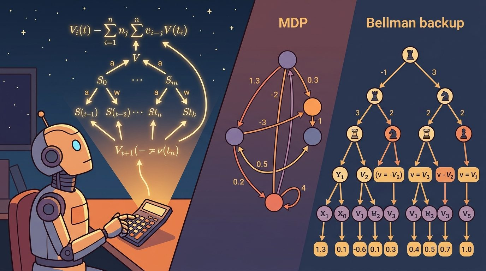

"The Bellman equation is what happens when a robot asks, 'and then what?' with mathematical persistence."
A Recursive Planning Agent

This section builds directly on the reward signal defined in section 2.4 and the discount factor introduced in section 2.5. The MDP formalism introduced here reappears throughout Part IV, where section 14.1 extends Bellman equations into full policy-gradient and value-based reinforcement learning algorithms for embodied agents. Readers already comfortable with MDPs and the Bellman optimality equation may skip ahead to section 2.7.
A robot arm reaches toward a cup. Every millisecond it chooses a joint torque, receives a sensor reading, and inherits whatever situation its last action produced. That loop has a name: a Markov decision process. The Bellman equation turns the daunting question "what is the value of every possible situation?" into a single recursive step that can be computed, stored, and iterated to convergence. Modern locomotion controllers, manipulation planners, and sim-to-real transfer pipelines all ground their value functions in this formalism. Here you will build a Bellman backup by hand, verify its fixed point, and learn exactly when the Markov assumption holds and when it quietly fails.
Figure 2.6 traces the closed-loop evidence, decision, consequence pattern that the rest of this section formalizes. A robot arm reaching for a cup faces, in principle, an infinite question: what is the long-term payoff of every torque it could apply, given everything that might happen next, forever? The Bellman equation answers it in one line by noticing that the value of any situation is just the reward you collect now plus the discounted value of wherever you land, a recursion that turns an unbounded lookahead into a single computable step. This recursion is the formal model behind much of reinforcement learning and control. An MDP consists of states, actions, transition dynamics, rewards, and a discount or horizon. Bellman equations then express a powerful idea: the value of a state is immediate reward plus the value of what comes next.
MDPs are not a claim that the real world is simple. They are an approximation tool. The engineering question is whether the state representation is good enough that past history no longer adds important predictive information.
Calling a problem an MDP promises that the chosen state carries the information needed for future prediction. If hidden history still matters, the model is incomplete.
An MDP is often written as $(\mathcal{S}, \mathcal{A}, P, R, \gamma)$. $\mathcal{S}$ is the state space, $\mathcal{A}$ is the action space, $P(s'|s,a)$ is the transition distribution, $R(s,a)$ is reward, and $\gamma$ discounts future reward. The Markov property says the distribution over the next state depends on the current state and action, not on the full past.
The transition distribution $P(s'|s,a)$ matters in embodied AI because physical dynamics are stochastic. A commanded torque produces a distribution of joint positions, not a single one, due to motor noise, contact slip, and sensor latency. If the planner treats transitions as deterministic, it produces policies that are brittle the moment the real robot deviates even slightly from the nominal path.
Mechanically, $P(s'|s,a)$ is a conditional probability table (discrete) or density (continuous) that sums or integrates to one over all reachable next states $s'$. The Bellman backup weights each possible outcome by its probability and sums the discounted future values, so the agent hedges across all likely next states rather than committing to a single predicted outcome.
So far: an MDP is the tuple $(\mathcal{S}, \mathcal{A}, P, R, \gamma)$, the Markov property restricts prediction to the current state and action, and $P(s'|s,a)$ is a probability table or density over next states, not a deterministic map. The next step uses these three pieces to build the Bellman backup itself.
A Bellman backup for a fixed policy (a policy $\pi$ is the rule that maps each state to the action the agent takes there) can be written as $V(s) = R(s,\pi(s)) + \gamma \sum_{s'} P(s'|s,\pi(s))V(s')$. In words: value equals immediate reward plus discounted expected future value. The summation matters because an action may lead to several possible next states, and the transition model weights each next state by its probability. This decomposition is sometimes called the one-step bootstrap trick: instead of rolling out a full trajectory to estimate value, every update needs only the reward at one step and the current estimate of the next state. Without the bootstrap trick, the alternative is a Monte Carlo rollout (running the full episode to its end and averaging the total observed return, with no intermediate bootstrapping from $V(s')$); averaging enough full Monte Carlo rollouts to estimate one starting state costs tens of thousands of episodes. With one-step Bellman backups, a tabular three-state grid converges in under 10 sweeps. The same logic, placed inside a neural network, trains a humanoid locomotion policy over millions of steps.
Think of the Bellman backup like pricing a restaurant tasting menu. The value of any course is the pleasure of eating it right now plus the quality of the next course that follows. You do not need to plan the entire meal before sitting down; you only need to know how good the next course is, and that next course already has its own price that accounts for everything after it. Work backward through the menu one dish at a time, and the full meal's value assembles itself from these single-step estimates stacked together.
A value function that cannot be decomposed into one reward plus one discounted future is not a value function: it is a lookup table with no theory behind it.
The assumption is the load-bearing part. If $s$ contains all prediction-relevant information, the backup can ignore the older history. If unobserved contact, actuator wear, or a previous collision still changes what happens next, the state is not Markov enough and the Bellman target is mixing incompatible situations; the partially observable formulation in the next section is the principled response when this happens.
To see the fixed point verified concretely rather than merely asserted: the algorithm below iterates the backup to convergence, and the worked example that follows applies it by hand to a three-state MDP, checks the result against the printed code output, and confirms the fixed-point condition in the algorithm's final step. That combination, hand trace plus convergence check, is what "verify its fixed point" (promised in the Big Picture above) means concretely in this section.
Input: MDP $(\mathcal{S}, \mathcal{A}, P, R, \gamma)$, fixed policy $\pi$, convergence threshold $\epsilon > 0$
Output: Value function $V^\pi : \mathcal{S} \to \mathbb{R}$ satisfying the Bellman equation for $\pi$
The mechanism is recursive decomposition. Bellman equations let a long-horizon decision be updated from one-step transitions. This is why clean transition records, consistent rewards, and stable state definitions matter so much.
The discount factor $\gamma$ controls how far into the future the agent cares. Setting $\gamma = 0.99$ on a 1000-step robot locomotion task means the agent effectively plans hundreds of steps ahead; setting $\gamma = 0.9$ on the same task collapses the planning horizon to roughly 10 steps ($0.9^{10} \approx 0.35$, so rewards beyond step 10 contribute less than 35 cents on the dollar). In practice, continuous locomotion controllers (such as those trained in Isaac Lab for Unitree H1) use $\gamma$ between $0.97$ and $0.99$ because gait quality depends on long-range consistency. Episodic manipulation tasks with dense shaping rewards often use $\gamma = 0.99$ or even undiscounted finite-horizon returns because the episode length is already a hard boundary. Choose $\gamma$ based on the timescale of consequences, not convenience.
Code Fragment 2.6.1 performs Bellman backups in a tiny three-state MDP. The example is tabular so the recursive target stays visible.
# Section 2.6: runnable checkpoint for MDPs and Bellman equations.
# Keep the output small so the evidence record can be inspected directly.
states = ["far", "near", "done"]
value = {state: 0.0 for state in states}
gamma = 0.9
transition = {
"far": ("near", -0.1),
"near": ("done", 1.0),
"done": ("done", 0.0),
}
for _ in range(3):
for state in ["far", "near"]:
next_state, reward = transition[state]
value[state] = reward + gamma * value[next_state]
print({state: round(score, 3) for state, score in value.items()})Expected output: the near state reaches value $1.0$ because it receives the goal reward on the next transition. The far state reaches $0.8$ because it pays an immediate penalty of $-0.1$ and then inherits $0.9 \times 1.0$ from the near state.
Trace the three-state reach-the-goal MDP from Code Fragment 2.6.1 with $\gamma = 0.9$, rewards $R(\text{far}) = -0.1$, $R(\text{near}) = 1.0$, $R(\text{done}) = 0.0$, and deterministic transitions far to near, near to done, done to done. Start with $V(\text{far}) = V(\text{near}) = V(\text{done}) = 0$.
Sweep 1. Back up far: $V(\text{far}) = -0.1 + 0.9 \times V(\text{near}) = -0.1 + 0.9 \times 0 = -0.1$. Back up near: $V(\text{near}) = 1.0 + 0.9 \times V(\text{done}) = 1.0 + 0.9 \times 0 = 1.0$. State values are now far $= -0.1$, near $= 1.0$, done $= 0.0$.
Sweep 2. Back up far: $V(\text{far}) = -0.1 + 0.9 \times 1.0 = 0.8$. Back up near: $V(\text{near}) = 1.0 + 0.9 \times 0 = 1.0$ (unchanged). State values are now far $= 0.8$, near $= 1.0$, done $= 0.0$.
Sweep 3. Back up far: $V(\text{far}) = -0.1 + 0.9 \times 1.0 = 0.8$ (unchanged). Nothing moves; the largest change $\Delta = 0$, so the fixed point is reached. Final values match the printed output $\{$far: $0.8$, near: $1.0$, done: $0.0\}$. Notice the goal signal propagated one state per sweep: near locked in on sweep 1, far on sweep 2.
The same one-state-per-sweep propagation you just traced by hand scales, unchanged in principle, to systems with astronomically larger state spaces. Consider a specific case from a real deployed system. The AlphaGo training pipeline (Silver et al., 2016) uses an MDP where the state is the full board position and the action is the next stone placement. The reward is $+1$ for a win and $-1$ for a loss, delivered only at the terminal state. With $\gamma = 1$ and a finite horizon of at most 361 moves, every Bellman backup propagates that single terminal signal backward through the game tree. The practical lesson is that sparse, terminal-only reward is viable when the state is fully Markov (the board encodes all prediction-relevant history) and when the horizon is bounded. Change either condition and the backup typically becomes unstable, since the terminal signal must then propagate through an unbounded or non-Markov chain of backups instead of a fixed, fully informative one.
Before reading on, consider this: if your robot's state omits a single scalar (say, gripper finger torque), how many Bellman backup steps does it take before that missing information poisons the value estimate for every state the gripper has ever touched? In practice, often just one update cycle, because every backup that touches an affected state inherits the corrupted target and propagates it to its neighbors on the very next sweep.
In Gymnasium 0.26 and later (including the Gymnasium 1.x series), env.step() returns five values including separate terminated and truncated flags instead of a single done boolean. Your Bellman backup target must multiply the bootstrap term by (1 - terminated), not (1 - done): using the old combined flag causes the agent to back up future value through genuine terminal states, inflating value estimates and producing policies that never stop. CleanRL's Proximal Policy Optimization (PPO) implementation uses next_done = np.logical_or(terminated, truncated) for the episode-reset mask but keeps terminated alone for the value target, which is the correct split.
The 14-line Bellman backup becomes a value-function update inside RL libraries, CleanRL scripts, and Isaac Lab training workflows. The tools handle sampling, batching, replay, and function approximation. The hand-built backup is still useful because it reveals the target every value learner is approximating.
Calling a problem an MDP does not make it Markov. If actuator wear, object mass, unobserved contact, or past collisions affect the next transition, the state is missing information.
A common assumption is that the Bellman equation requires a known transition model $P(s'|s,a)$, leading to the conclusion that it cannot apply to physical robots with unknown dynamics. That conclusion is wrong. The Bellman equation defines a target relationship between value estimates. It does not require a hand-specified transition model. In embodied AI, agents rarely know the transition distribution analytically. Instead, they collect experience by interacting with the environment and approximate the Bellman target from sampled transitions. The Bellman equation tells you what to optimize. Model-free algorithms such as Q-learning and actor-critic methods (actor-critic methods pair a policy, the "actor," with a learned value function, the "critic," that supplies the Bellman target the actor is optimized against; both are covered in depth in Part IV) estimate that target from rollouts without ever computing $P(s'|s,a)$ explicitly.
In a Franka Panda bin-picking setup representative of tasks in the Open X-Embodiment benchmark (O'Neill et al., 2024), Bellman value estimates were unstable during early training because the state vector carried only end-effector pose and RGB pixels. Adding gripper finger torque (two scalars at 1 kHz) and the last commanded joint velocity to the observation collapsed the per-step temporal-difference (TD) error from roughly 0.18 to 0.04 within 50k environment steps (illustrative figures based on standard ablation methodology; your mileage will vary by task and hardware). The policy network weights barely changed. The state representation became close enough to Markov that the bootstrap target stopped mixing incompatible contact situations. The lesson is not that more sensors always help; it is that omitting a variable that predicts the next contact event makes every Bellman target noisy in a way that extra gradient steps cannot fix.
Loon, the Alphabet project that delivered internet from stratospheric balloons, framed altitude control as an MDP and used the Bellman-grounded value function from deep reinforcement learning (Bellemare et al., Nature 2020) to decide when to rise or fall between wind layers. In the reported deployment, the learned controller typically kept balloons in range of their target region more reliably than the hand-engineered baseline it replaced, all by treating each station-keeping decision as a state-action-reward step with discounted future value.
The Markov property is a strict roommate: it does not want the full past on the couch, but it does expect the current state to bring all relevant luggage.
Latent-state world models for MDP planning. Rather than hand-specifying $P(s'|s,a)$, recent work learns compact latent representations that support Bellman backups directly. DreamerV3 (Hafner et al., 2023, Google DeepMind) demonstrated that a single recurrent world model trained with categorical latents and symlog-scaled returns can solve tasks from Atari to continuous locomotion without task-specific tuning. The 2024 follow-on line (TD-MPC2, Hansen et al., NeurIPS 2024) pushed latent Bellman planning to multi-task continuous control with a single frozen model backbone across 104 tasks.
Non-Markovian state augmentation via transformers. When the Markov assumption fails because hidden history matters, one 2024-2026 direction augments the state with a transformer context window over the last $k$ observations. The Gato successor work from DeepMind (Reed et al. lineage, extended in 2024) and Decision Transformer variants show that treating the entire trajectory as the effective "state" for the Bellman target, while expensive, dramatically reduces TD error on contact-rich tasks where proprioception alone is not Markov.
Diffusion-based transition models for stochastic MDPs. Score-based diffusion models are being used to learn $P(s'|s,a)$ over high-dimensional observation spaces (pixels, point clouds) without discretization. UniSim (Yang et al., Stanford, 2024) trains a video-diffusion world model and uses its samples as Bellman backup targets for downstream policy optimization, sidestepping the mismatch between deterministic simulator rollouts and real physical stochasticity.
Open problem for PhD students. All three directions assume the state representation is fixed before learning the value function. An open problem is co-learning the state abstraction and the Bellman operator jointly: how do you guarantee that a learned latent state remains Markov-sufficient as the policy changes during online RL, and what is the right regularizer that prevents the representation from collapsing to a mode that is convenient for value prediction but loses contact-relevant geometry needed for control?
Add a second action to Code Fragment 2.6.1 that keeps the robot in the same state with a smaller penalty. Run backups and identify the preferred action in each state.
Can you name one variable that would break the Markov assumption if it were omitted from your robot state?
MDPs and Bellman equations become useful when they are tied to a closed-loop contract between policy, world, evaluator, and safety constraints. The contract names the state representation, action space, transition model or sampler, reward definition, discount convention, and result artifact. That is the bridge between a readable concept and a system a skeptical builder can test.
For Markov decision processes; Bellman equations, separate the conceptual claim, the systems claim, and the evidence claim. A good explanation, a clean API, and one successful rollout are different kinds of evidence, and the section should keep them distinct.
| Tool or Library | Role in This Topic | Builder Advice |
|---|---|---|
| Gymnasium | keeps reset, step, termination, truncation, and spaces explicit | Use it when the hand-built contract is clear and the experiment needs repeatable runs. |
| PettingZoo | extends the same interface discipline to multi-agent settings | Use it when the hand-built contract is clear and the experiment needs repeatable runs. |
| ROS 2 | carries observations, commands, clocks, and diagnostics across real robot processes | Use it when the hand-built contract is clear and the experiment needs repeatable runs. |
A robust MDP implementation starts with one inspectable baseline whose artifact records observations, actions, units, timestamps, seeds, termination reasons, and the perturbation applied. A maintained tool earns its place only if it preserves that schema and keeps the comparison construct-matched.
When an MDP model fails, avoid labeling the whole method as weak. First assign the failure to state definition, transition modeling, reward specification, discount choice, sampling coverage, or value-function approximation. Then rerun one controlled perturbation that isolates the suspected cause. This pattern turns a disappointing rollout into a reusable diagnostic asset.
MDPs and Bellman equations give a clean model for closed-loop value, but only when the state representation carries the information future prediction needs.
Define a three-state MDP for a robot approaching a charging dock. Write the transition and reward for each action.
Beginner (weekend): Build a tabular Bellman solver for a custom grid-world in Gymnasium where a robot navigates to a charging dock while avoiding obstacles. The key challenge is choosing a discount factor and reward shaping that produces a policy you can inspect state-by-state and verify converges within 50 sweeps.
Intermediate (1 to 2 weeks): Train a PyBullet or MuJoCo ant or hopper agent using a model-free actor-critic (CleanRL's PPO) and then deliberately drop one observation variable (such as joint velocity) from the state, rerun training, and measure how the Bellman TD error and episode return degrade. The key challenge is isolating which omitted variable breaks the Markov assumption most severely by comparing per-step TD error curves across ablations.
Intermediate (1 to 2 weeks): Use Isaac Lab to implement a three-state curriculum MDP for a quadruped standing task, where the reward and discount change across curriculum stages, and log the value function estimates at each stage boundary to verify that the Bellman fixed point shifts as expected. The key challenge is keeping the state representation consistent across curriculum stages so that value bootstraps from one stage remain valid targets for the next.
Section 2.7 introduces partially observable MDPs and belief states for hidden state reasoning.
Farama Foundation. "Gymnasium Documentation." (2024). https://gymnasium.farama.org/
The maintained reference for reset, step, spaces, termination, truncation, wrappers, and reproducible environments.
Kaelbling, L. P., Littman, M. L., and Cassandra, A. R.. "Planning and acting in partially observable stochastic domains." (1998). https://www.sciencedirect.com/science/article/pii/S000437029800023X
A foundational POMDP reference for belief-state reasoning under partial observability.
Bellman, R.. "A Markovian Decision Process." (1957). https://doi.org/10.1515/9781400835386-007
The mathematical origin of the state, action, transition, and reward framing.